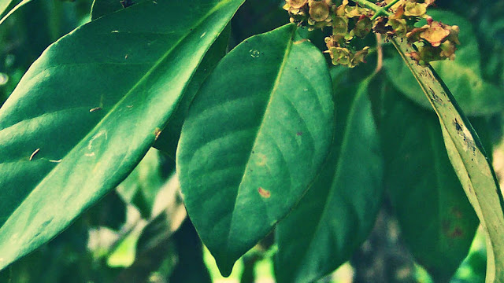

Daun salam sudah tidak asing lagi dikalangan para ibu-ibu Indonesia. Tanaman salam merupakan penghasil rempah yang umumnya digunakan dalam masakan dan campuran herba tradisional. Diantara manfaat air rebusan daun salam untuk menyembuhkan berbagai penyakit umum, termasuk sakit kronis. Daun salam dalam bahasa latin disebut Syzygium Polyanthum, perdagangan luar negeri kerap menyebutnya Bay-leaf ataupun Indonesian Laurel.Dalam pembuatan masakan tradisional, daun salam dicampurkan dalam keadaan utuh, kering ataupun segar. Campuran memberikan aroma herba yang khas, lembut, sehingga menambah ciri khas masakan daerah. Kulit batang mengandung tanin dan dimanfaatkan untuk mewarnai dan mengawetkan jala, bahan anyaman dari bambu, dan lainnya. Kulit dan daun salam juga digunakan sebagai ramuan untuk menyembuhkan sakit perut, dan menghentikan buang air besar. Selain itu, manfaat air rebusan daun salam digunakan untuk mengobati asam urat, stroke dan kolesterol, melancarkan peredaran darah, radang lambung, diare, gatal-gatal pada kulit, dan kencing manis.
Manfaat air rebusan daun salam untuk mengobati diabetes tipe 2, kolestrol, asam urat, maag akut, darah tinggi, dan gangguan pencernaan. Berikut ini cara membuat ramuan sederhana dari daun salam:
Ambil 10 lembar daun salam yang masih segar, kemudian rebus kedalam 3 gelas air hingga menjadi segelas air.
Saring air rebusan, dan minum selagi hangat 2 kali sehari secara teratur.
Kandungan kimia daun salam terdiri dari minyak atsiri, tannin, dan flavonoida. Daun salam kering mengandung 0,17% minyak esensial, terdiri dari senyawa eugenol dan methyl chavicol. Ekstrak etanol digunakan sebagai antijamur dan antibakteri, ekstrak metanol bisa digunakan sebagai anti cacing.
Manfaat air rebusan daun salam mengandung asam caffeic, quercetin, euganol dan catechin. Senyawa ini dapat melindungi tubuh dari serangan kanker, mengandung phytonutrient (parthenolide) untuk menahan proliferasi sel kanker serviks.